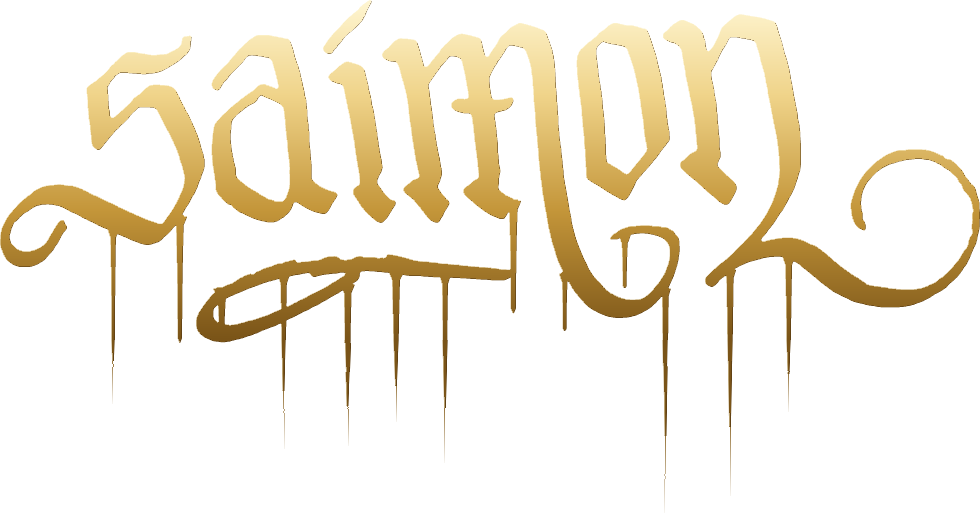

0 SMC
0 SMC 0 SMP
0 SMPVas a casa…
Viajero
Simoncoin 0 · Simonplata 0 · Simonchis 0
0 SMC0 SMP
CityMedellín
Cargando el valle…
Elige tu municipio. Ahí está tu casa, de sur a norte.
Sólo esta vez. Después entras con el apodo y la contraseña, sin el correo.
Acepta letras, números y espacios. Así quedará: (vacío)
Escribe una contraseña.
Escritorio. WASD o flechas caminan (siguen la cámara). Clic en el suelo para ir. M o E monta y desmonta; el botón Bajarse aparece a caballo. La Casa bancaria, junto al parque, guarda Simoncoin y objetos. I inventario, K habilidades, L Libro Mayor, H ayuda.
Móvil. El joystick o un toque en el suelo mueven. Pellizca para el zoom y arrastra para girar la vista. Montar y el Libro Mayor están en los botones grandes. La Casa bancaria está junto al parque. Los paneles se arrastran desde la barra y se pliegan con –.
/grupo nombre · /clan nombre · /pagar jugador monto.N · Norte S · Sur OR · Oriente OC · Occidente
Arrastra para mover el mapa. Pellizca o usa + y − para el zoom. Toca un lugar y confirma para teletransportarte. Toca el terreno: confirma el teletransporte o pulsa Ir aquí para caminar.
El banquito de la Casa bancaria y el baúl de tu casa son el mismo depósito. Guardar o retirar no crea monedas: sólo las mueve, y cada pase queda en el libro mayor.
1 SMC = 100.000.000 SMH y 1 SMP = 100.000.000 SPH. Es la misma cantidad; el botón sólo cambia cómo se escribe.
En el depósito: 0 SMC
En la billetera: 0 SMC
En el depósito: 0 SMP
En la billetera: 0 SMP
100 SMP = 1 SMC. La Plata se quema y el SMC sale del fondo ya emitido.
SMC y SMP no son dinero real. Nada de esto se paga por OnePay ni por USDT.